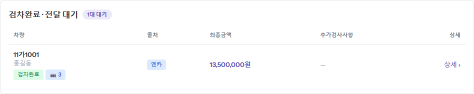
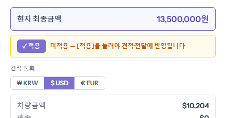
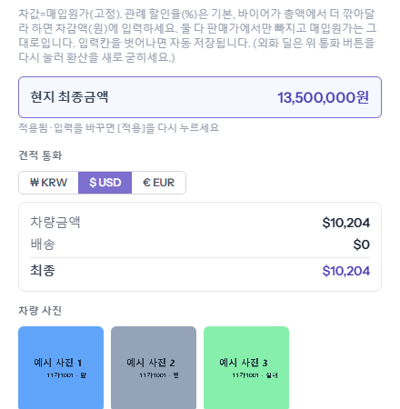
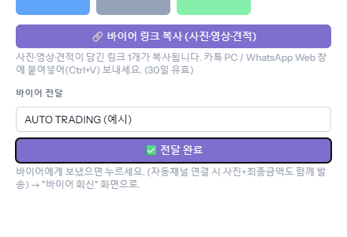
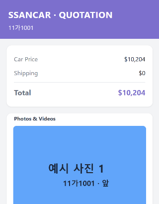
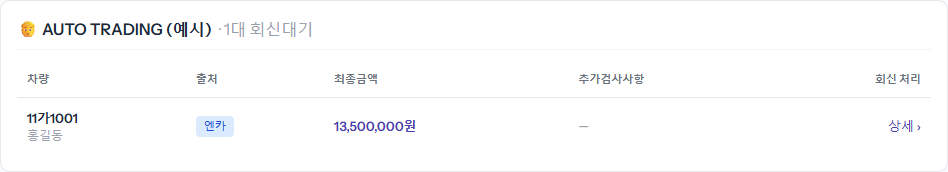
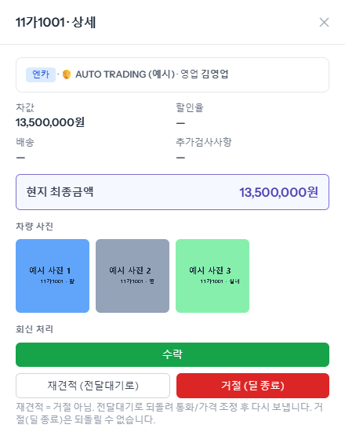
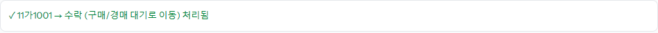

검차가 끝난 차는 「전달 대기」에 모입니다. 여기서 바이어에게 보낼 견적 금액과 통화를 정하고 링크를 보낸 뒤, 바이어가 답하면 「바이어 회신」에서 수락·거절을 처리합니다. 수락한 차는 「경매/구매」로 넘어가 구매확정을 기다립니다.
사이드바 「전달 대기」 옆 숫자가 기다리는 차 수입니다. 차 이름 아래 「검차완료」와 사진 장수가 함께 보입니다.

오른쪽 창 「견적 통화」에서 바이어와 거래할 통화(₩KRW·$USD·€EUR)를 고르면 그 통화로 바꾼 금액이 아래에 보입니다. 할인율·차감액·배송을 바꿨으면 노란 칸의 [적용]을 눌러야 견적에 반영됩니다. 통화는 꼭 골라야 합니다.


[바이어 링크 복사 (사진·영상·견적)]를 누르면 링크 하나가 복사됩니다. 카톡이나 WhatsApp 창에 붙여 넣어 보냅니다. 링크는 30일 동안 열립니다. 보냈으면 「바이어명」을 적고 [전달 완료]를 누릅니다. 차는 「바이어 회신」으로 넘어갑니다.

로그인 없이 열리는 영어 화면입니다. 위에 견적(차량금액·배송·합계), 아래에 검차 사진과 영상이 나옵니다. 영상이 나중에 올라오면 같은 링크에 저절로 더해집니다.

보낸 차가 바이어 이름별로 묶여 보입니다. 한 바이어에게 여러 대를 보냈으면 한 묶음에 모입니다. [상세 ›]를 누릅니다.


확인 창에서 [확인]을 누르면 아래 안내가 뜨고, 차는 매입예정 목록에서 「구매대기」(경매 출처는 「경매대기」)로 바뀝니다. 다음은 「구매확정」 가이드입니다.
